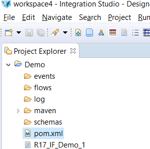
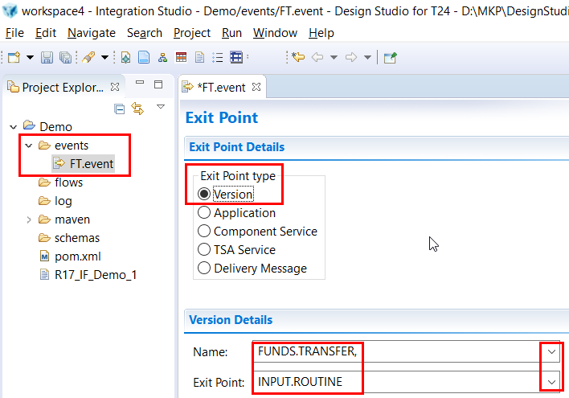
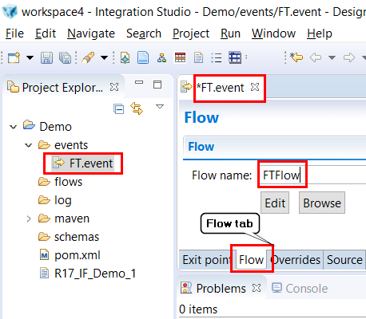
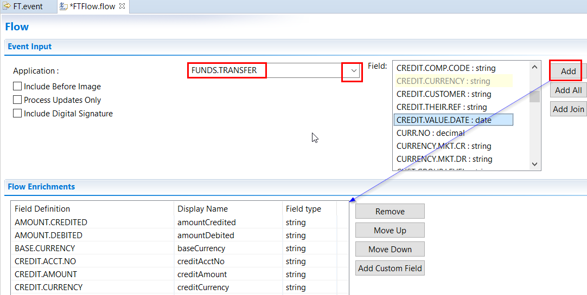
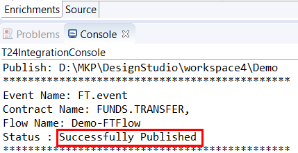
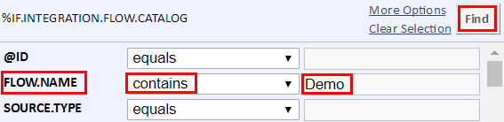
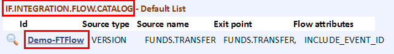
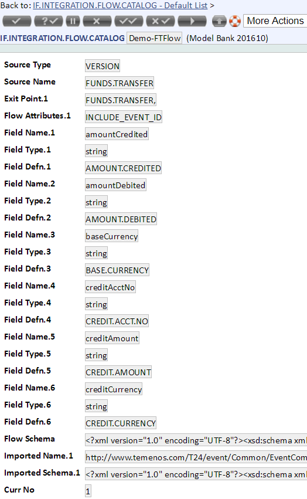

Integration Events
Integration Framework Service is used by to perform event delivery to a middleware and to perform transformations.
Integration Framework Service handles the following the high-level operations:
- Transformations
- Event Delivery through middleware
Introduction
This guide will help you to deep down into T24 Integration Events. In 3 Minutes Guide we accessed events in POSTMAN using Data Service and in this guide we’ll:
- Create T24 Integration Project
- Create Events
- Create Flow
- Create Events & Flow Design Studio Package
- Install the events
- View event flow in T24
- Generate the events
- Event data in REST Client
Prerequisites
To complete this guide you need:
Temenos Sandbox
Temenos Design Studio
Google Chrome browser – Download from here: Chrome
POSTMAN chrome extension
- Either look for POSTMAN ReST client on any search engine OR
- Click this link
Completed following guides:
Create T24 Integration Project
- Launch Design Studio
- Make sure to select Integration Studio perspective:
- On top menu bar, go to Window > Perspective > Open Perspective > Other
- From the list, click on Integration Studio > OK
- In order to create a new T24 Integration Project go to File > New > T24 Integration Project:
- Choose a name for your project
- Check 'Enable project specific settings'
- Choose Connection Method as Web Service
- Insert IF Service URL: http://localhost:9089/axis2/ (replace 'localhost:9089' with your sandbox address or use your localhost, then '/axis2/')
- Insert your T24 User Name and Password
After finishing above steps, you’ll get an empty project in your workspace:

Create Events
In created project, go to Events folder > click right > New > T24 Event Wizard
Enter the Event name (File name) e.g. FT.event
- Click on Finish button.
Exit Point
- Select the Exit Point Type and T24 Version details. In this example we have selected comma version of FUNDS.TRANSFER application and exit point INPUT.ROUTINE because we want the event data when user inputs something.

Create Flow
Now create the Flow for this Event.
- Click on the Flow tab and enter the Flow name

- There are two options:
- If you want to use any existing Flow, then click on Browse button and Select from existing ones:
- otherwise click on Edit:
- Select fields of interest:

- Save the changes: CTRL + S
Publish Event Flow in T24
- Right click on the project name, go to Integration Studio and click on Publish
- You should get a success message if no problem occurs during publishing the events.

Check availability of the Flow in T24
- Login to T24.
- Once you login, type IF.INTEGRATION.FLOW.CATALOG L L in command windows and press enter key.
- A new window will popup > select List Live File and there > search your Flow as per below example:

- You can see that the flow created in above steps is available in T24:

- When clicking on it, it will bring up the details of the Flow designed before:

- Alternatively you can directly type the name of the flow get it directly from T24 command windows:
e.g. IF.INTEGRATION.FLOW.CATALOG S IntegrationDemo-FTFlow
Initiate Transaction and See the Event Data in POSTMAN
Follow this 3 Minutes guide to see events data in POSTMAN